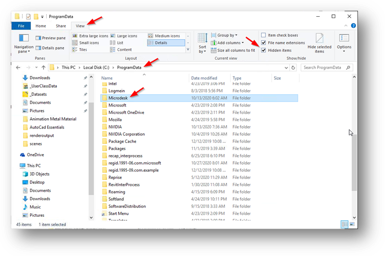
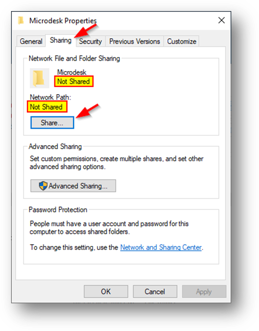
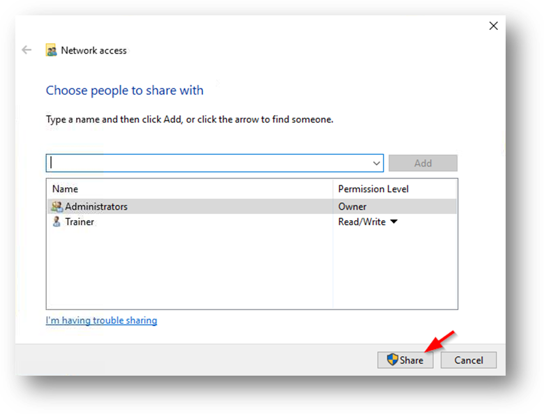
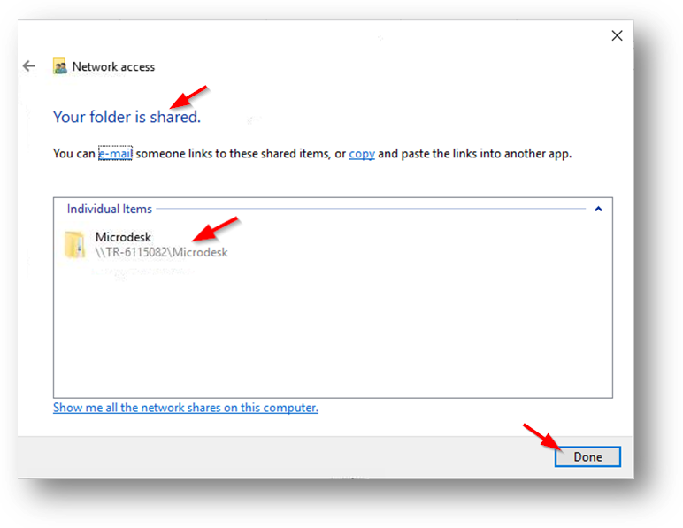
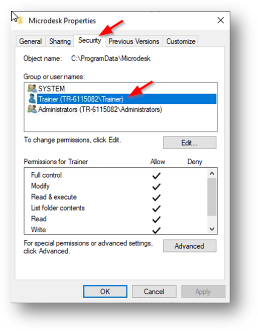
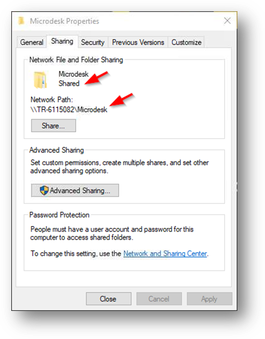

Remote Share
To transfer the files referred to above, it is necessary that a remote share be defined. This share is then used by Naviate Cloud Manager to create subfolders and copy files as described above.
Please Note — Naviate Cloud Manager Professional version should first be installed on the machine remote machine before performing the following settings.
The folder to be shared is C:\ProgramData\Microdesk.

Using the Windows File Explorer, C:\ProgramData will not be visible until Hidden Files has been turned on. To do so, go to the View tab and check hidden files, as shown.
Once the Symetri subfolder has been located, right click and select Properties to bring up the following screen. Click on the Sharing tab to present the Sharing settings.

As shown, the folder is not shared and a Network Path does not exist.
Click the Share button to bring up the following screen.

All users with access to the share are shown. By default, the currently logged on user is added.
After adding any additional users by using the dropdown list and Add button, click the Share button.

This screen shows confirmation the folder was shared and displays the Network Share that was just created. Press the Done button to conclude the process.
To view the permissions, go to the Security tab.

As shown, the user designated to access this remote machine has full access permissions. This is necessary because they will be creating subfolder directories and copying files. If they don’t have the ability to both read and write, then these permissions must be added.
Finally, if we go back and look at the original screen, it now shows the updated share information.

As shown, the folder now indicates it is shared, and the Network Path displays the path assigned to it. This is the same path the Server Definition Remote Share Path is expecting for use in connecting to and interacting with it, as part of the Job deployment process.
Defining the Remote Share is also addressed above in the section on Network Servers, as part of the Remote Share field definition. Please pay close attention to the following subjects that are addressed there:
- The possible need to substitute the IP address for the machine name when accessing the machine Network Path. This would produce a Server Definition Remote Share Path in the above example of \\192.168.3.80\Symetri (instead of the \\TR-6115082\Symetri shown above).
- The necessity of creating a native Windows share, even if operating in a NAS (Network Access Server) environment.
- The importance of verifying the Remote Share Path using the commands provided as part of the Server Definition process. This not only verifies the remote computer has been setup correctly to allow remote access, but that the access parameters contained in the Server Definition are correct and will provide that access.